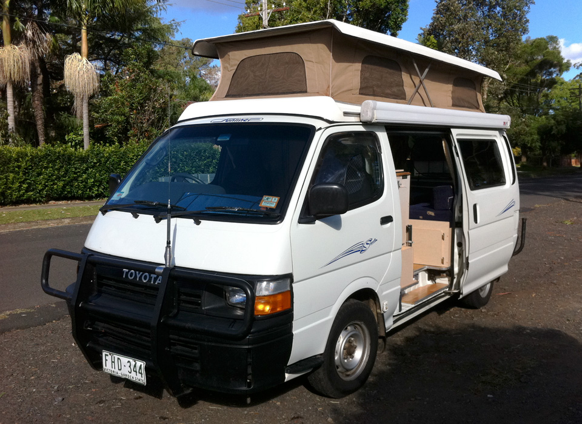
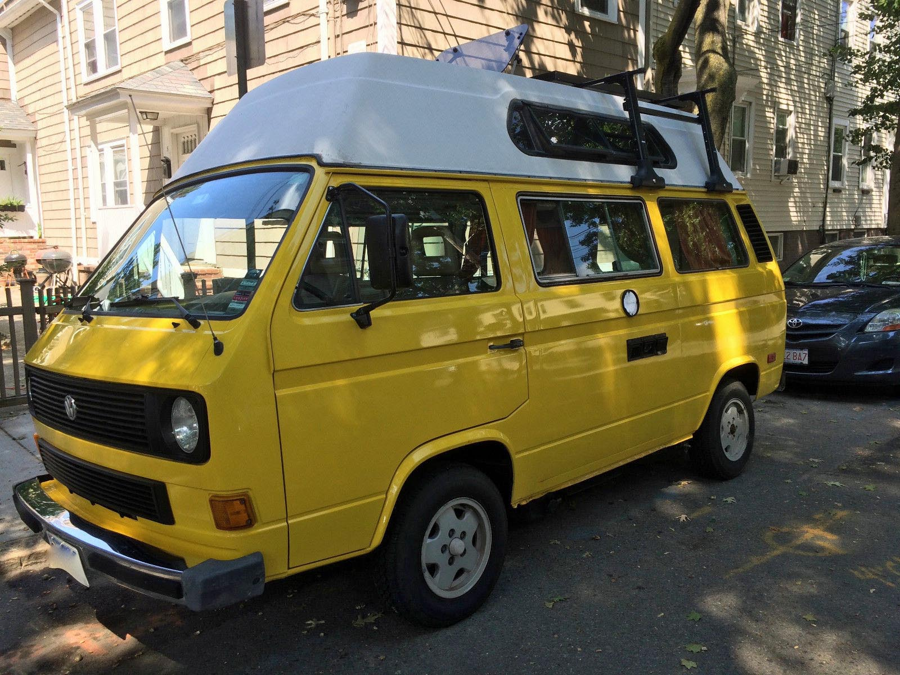
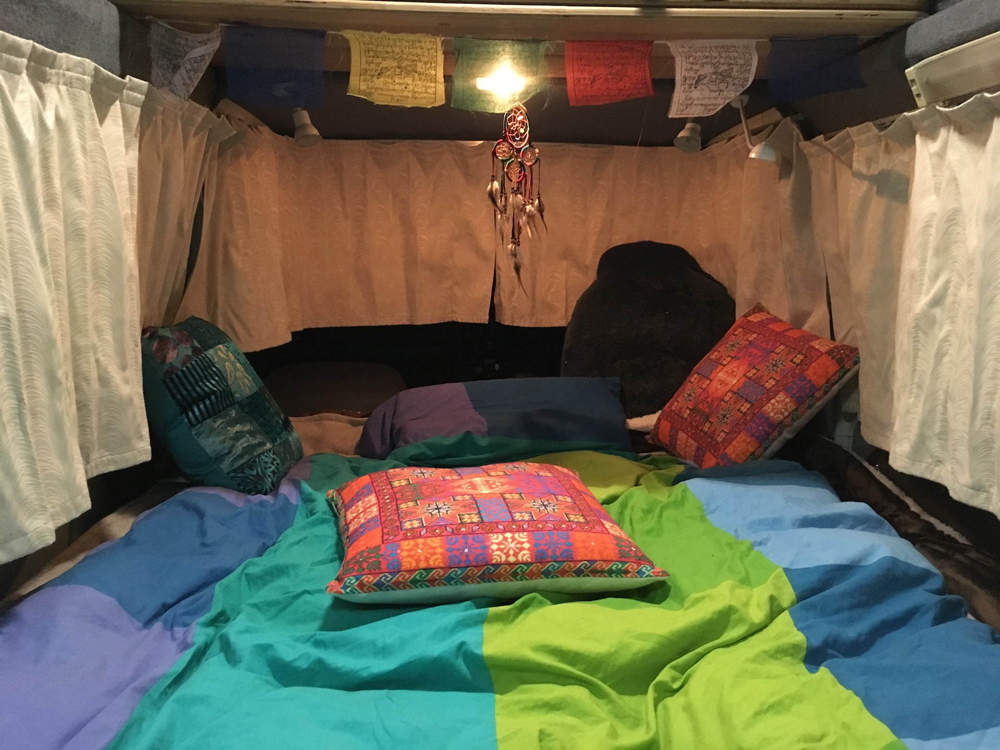

name: inverse layout: true class: center, middle, inverse --- # A PROGRAMMER'S GUIDE TO VAN LIFE <img src="assets/img/lambda.svg" alt="lambda" style="height: 3em;"> by Chen Zhao Email: [zzzcca12@gmail.com](zzzcca12@gmail.com) Twitter: [@lostylogic](https://twitter.com/lostylogic) Github: [@crunchysoul](https://github.com/crunchysoul) Instagram: [@funkycrunchy](https://www.instagram.com/funkycrunchy/) .footnote[Link to [source code](https://github.com/crunchysoul/talk-vanlife)] ??? 1. what 2. motivation 3. introducing as project creator 4. benefit 5. hello world 6. quick started vim jokes 7. truth learnt as project maintainer and end user 8. a normal day --- # What is it? ### In short: Living in a van fulltime ??? In short: Living in a van What comes to your mind when you think about people living in the van? FBI? CARTON? HIPPIE? BREAKING BAD? DRUGS? CREEPY? SUPERFLEX VEGAN/HAMP/YOGA/MEDATATION GURU? Well, You are all right, absolutely right. It's just not my van life. Let me tell you that the way you live is not a dependency to ensure you the uniqueness, it's just slightly different to most fellows. Not thing biggie. --- # What is my motivation? ### A Pragmatic move for a idealist ??? How I first got into this life? Last year while I studied my CS and Math degree in ANU. I made some crazy realisation: 1. I'm quite crazy 2. I spend most of my time at uni, in a normal day, I would be out at 10am(11am really), and back around 10pm, for those super motivated period(projects/competetion/final/assignment), I would staie there without too much concern of time, so home would become a special occasion for me 3. of course, I was/am/will be for enternity single?? 4. I was paying about $200 rent per week 5. So quite rational question surfaced in my gaintitc head ==> What is home? 6. Home is physical place, a location, with an unique address, that will be called upon when I need rest/cook/bath/practicing guitar/.../, so IT IS a Symbol, just like a symbol in Ruby... 2 mins ponding time for you all 7. Time flies... 8. If Home is merely a symbol that occupy my memory, what's the possibility of detach it. 9. TDD: Test Driven Development also works for this, --- # Imagine Van Life is a project ### think any technologies --- background-image: url(./assets/img/vanlifes.png) --- # Awesome Buzzwords .red[*] ### .blue[Amazing Views, Freedom, Adventure, Inexpensive, Outdoorsy, Work anywhere, Minimally Easy, Rainbow, Unicorn...] <!-- ### .blue[Agile, Flexible, Easy Implementation, Customisable, Low cost, Unique, Rainbow] --> .red[*] what shows on home page --- # Hello world .red[*] .left[ ```ruby def van_life(life) life[:home], life[:van_feeling] = "Van", "Freedom and Awesomeness" return rainbow_n_unicorn end ``` ] .red[*] what shows on home page --- # Getting Started --- # System requirement check .red[*] .left[ ```ruby def system_check?(person) has_children? has_pet? has_house? has_car? has_hobbies? has_initial_investment? regular_locations? relationship_status empolyment_status live_witout_(*)? sleep_pattern ... end ``` ] .red[*] before_action: think as many as possible --- # Buying a van .red[*] .left[ ```ruby def buy_van(van) case van when "stealth van" return { pros: [ "cheap", "stealth" ], cons: [ "build", "can't stand", "lack *" ] } when "pop top van" return { pros: [ "relative stealth", "stand", "factory build" ], cons: [ "lack storage", "winter", "maintenance", "expensive" ] } when "high top van" return { pros: [ "stand", "factory build", "spacious", "equipment" ], cons: [ "can't hide", "tall", "maintenance", "expensive" ] } else search_a_unicorn end end ``` ] .red[*] need patience and luck to get the right one --- <img src="assets/img/stealth_van.jpg" alt="stealth_van" style="height: 24em;"> .left[ ```ruby stealth = { pros: [ "cheap", "stealth" ], cons: [ "build", "can't stand", "lack *" ] } ``` ] ---  .left[ ```ruby pop_top = { pros: [ "relative stealth", "stand", "factory build" ], cons: [ "lack storage", "winter", "maintenance", "expensive" ] } ``` ] ---  .left[ ```ruby high_top = { pros: [ "stand", "factory build", "spacious", "equipment" ], cons: [ "can't hide", "tall", "maintenance", "expensive" ] } ``` ] --- <img src="assets/img/emmy_2.jpg" alt="emmy 2" style="height: 24em;"> ## *"Emmy Lou"* --- # *"Emmy Lou"* 2000 Toyota Hiace Hightop, with 2.4 Petrol, auto, 300+ kms ### Equipments: .left[ ```ruby equipments = { power: [ "secondary deep circle battery 100Ah", "4 kg gas cylinder", "roof solar panel" ], kitchen: [ "60L water tank", "water sink with electrical water pump", "3 ways 90L fridge", "two burnner stoves", "microwave oven (removed)" ], entertaining: [ "20inch Tv (removed)" ], living: [ "convertable sofa/double bed", "upper bunkbed", "convertable table"], extra: [ "shower drop at rear", "storages", "mosquito net", "server lights", "radio", "electricity moniter"] } ``` ] --- # Move to van .left[ ```ruby def move(apartment, van) keeps = [] disappears = [] def cleanup(home) home.map do |thing| thing.essential? ? (keeps << thing) : ( disappears << thing) end end cleanup(appartment) disappears.give_or_throw keeps.move_to(van) end ``` ] ??? homebrew: brew cleanup --- # Move to van .left[ ```ruby belongings == "8 storage boxes of nonsense" keeps == "3 stroage boxes of #{essentials}" essentials = { clothes: "2 for each different social events", kitchen_utensils: "maximal 2 for each kind, all mini sized", guitars, climbing_gears, gadget: [ "laptop", "headphone"], beddings: "one set", toiletaries, medicines, tools } ``` ] --- <img src="assets/img/living_3.jpg" alt="live 2" style="height: 24em;"> ## New home at day ---  ## New home at night --- <img src="assets/img/kitchen.jpg" alt="kitchen" style="height: 24em;"> ## New home kitchen --- # The beginning of new journey .red[*] .left[ ```ruby def maintain_van_life(issues, features, performance) while live_van_life do issues.resolve features.add performance.optimise end end ``` ] .red[*] Recursive experiences of resolve issues, add new features, optimise peformance --- # How to survive van life? ### Planning and Adapting --- # Planning .left[ ```ruby def make_plan important_locations = { water_supply: [ "friends' place", "old apartment", "camping ground", "tourist center", "university", "resturants", "workplaces", "gym", "anywhere I can get" ], toilets: [ "gym", "library", "24hours resturants", "petrol stations" ], gas_cylinder: "Bunnings", fule: "petrol station", late_night_work: [ "university library", "Pancake Parlours (wifi: lovely57)", ], park_locations: [...], ... } end ``` ] --- # Planning .red[*] ### .violet[Always plan ahead everyday] where heading to, important_locations, where to park for the night .red[*] do what flight/ship Captains do --- # Planning .red[*] ### .violet[Keep monitoring and loging] vehicle condition, fuel level, electricity level, water level, gas level .red[*] do what flight/ship Captains do --- # Adapting .red[*] ### .violet[Keep alert to inside of van] things and equipments can and will breakdown, and always at the most inconvenience time .red[*] do what ship mechanics do --- # Adapting .red[*] ### .violet[Keep alert to outside of van] environment and surrounding, human interactions, inform others openly .red[*] do what securities do and by me --- # Get into van life .left[ ```ruby def van_life_steps system_check buy_van move(apartment, van) maintain_van_life make_plan be_adaptive end ``` ] --- # Buzzwords revision .red[*] ### .blue[Agile, Environment friendly, Essence focused, Open to others, Cherish, Apatable, Great challenge, Experiences, Insights, Courage ] .red[*] with experiences as project creator, maintainor and user --- # Hello World revision .red[*] .left[ ```ruby def van_life(life) life[:home] = "Van" life.update(life) do |key, value| live_with_van(value) end return life end ``` ] .red[*] not as simple as replacing home address --- # As a Rubist ### .red[:home] is not just a Symbol nor a fixed address in memory or physical, names of where and how we live don't matter, the value behinded .red[:home] matter, make it meaningful. ```ruby life = { ... home: "where the ❤️ is" ...} ``` --- ## One more thing... <img src="assets/img/pee.jpg" alt="pee" style="height: 22em;"> Answer: #peejar --- name: last-page template: inverse # That's all friends, thank you! .red[*] ## .violet[Q & A] by Chen Zhao Email: [zzzcca12@gmail.com](zzzcca12@gmail.com) Twitter: [@lostylogic](https://twitter.com/lostylogic) Github: [@crunchysoul](https://github.com/crunchysoul) Instagram: [@funkycrunchy](https://www.instagram.com/funkycrunchy/) .red[*] now, all of you have become the contributor to my vanlife project, thank you!